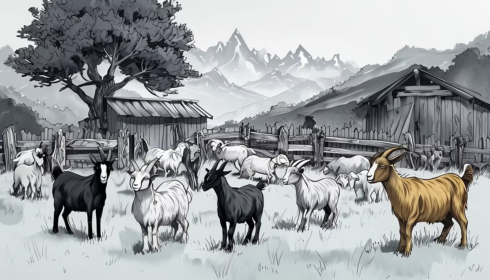

The Earthquake That Froze a Goat Herd in Time
Imagine walking into an ancient room and finding ten goat skeletons, perfectly preserved, exactly where they fell, over 1,270 years ago. That's exactly what we discovered at Tel Beth Shemesh (East) in Israel during excavations between 2018 and 2020.
The Day the Earth Stood Still
A massive earthquake struck the region around 749 CE, one of the most destructive seismic events in the history of the Middle East, documented in Hebrew, Muslim, and Christian sources. The earthquake brought down a roof, and the goats penned inside never made it out.
What makes this one of the most extraordinary archaeological discoveries for kids and adults alike is that it is a 'living herd frozen in time.' Usually, when we study animal bones found in an excavation, we examine thousands of fragments accumulated over centuries of meals and waste. The bones are mixed, broken, and scattered. But here, we had a single snapshot, one herd, one room, one specific day in history.
What the Herd Told Us
So what did the bones reveal? Mostly young adult female goats, between 18 months and 4 years old. Very few babies, no elderly animals. This is where zooarchaeology explained for children becomes like a real detective story: every detail in the bones is a clue.
A herd with mostly young adult females tells us the farmer was managing the animals carefully, keeping females for milk and breeding, slaughtering males for meat once they were big enough. The timing of the earthquake in mid-summer, combined with the ages of the animals, suggests they may have been destined for a religious feast. In one afternoon in 749 CE, a farmer lost everything. And 1,270 years later, we could read the whole story from the bones.
Archaeology Is Like Being a Detective
This is one of the most important things to understand about how archaeologists find animals and piece together the past: we are detectives. We don't have photographs of ancient life. We don't have diaries or shopping lists from 5000 years ago. What we have are clues, bones, coins, broken pottery, carbon dating, and sometimes an extraordinary accident of preservation like this one.
At Tel Beth Shemesh, the collapsed roof actually did us a favor. It sealed the room like a time capsule. The bones stayed exactly where the animals fell, which meant we could study not just what animals were present, but how they were positioned, how old they were, and what season it likely was when the earthquake struck.
What Would Your Home Look Like Frozen in Time?
Here's a question to explore with your kids: what would your home look like if it were 'frozen in time' today? If archaeologists dug it up in the year 3275, what would they find? What would your leftover dinner plates say about what you eat? What would your toys and books reveal about what you care about? What would the layout of your rooms tell them about how your family lives together?
This is exactly the kind of thinking that zooarchaeologists do every day, and it's a wonderful way to help children understand that history isn't just about famous kings and battles. It's about ordinary people and their animals, their meals, and their everyday lives.
Explore More with ZooArchaeology for Kids
The ancient earthquake at Tel Beth Shemesh is just one of hundreds of incredible stories hiding in bones from archaeological sites around the world. The ZooArchaeology for Kids book series, written by a real archaeologist who has worked on excavations just like this one, brings these discoveries to life for children ages 6–16. Complete with vivid illustrations, anatomical atlases, and activity pages, it's the perfect book for any young explorer who loves mysteries, animals, and history.

References
Namdar et al. 2022. Journal of Archaeological Science: Reports 45: 1–10. https://doi.org/10.1016/j.jasrep.2022.103555